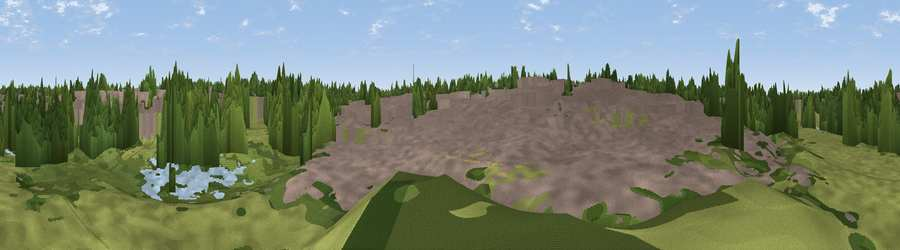

Viewpoint near Milton Keynes
#45891 in England · top 97% of its area beats it · near Milton KeynesWhere it is
The exact computed spot (SP 84604 37014). Click the marker for map links.
The view, rendered

A 360° render of this exact spot computed from the terrain model, tree cover and land cover — summer colours, afternoon light, calibrated against photographs of famous viewpoints. Real trees, hedges and buildings will differ in detail.
The panorama
Grey silhouette: terrain skyline in each direction (720 bearings, Earth curvature and refraction included). Dashed green: skyline with trees (+15 m) and buildings (+8 m) as obstacles. Blue strip: how far the ground is visible on each bearing.
Where the view opens
Wedge length = distance to the farthest visible ground on that bearing (vegetation-aware). Rings at 10, 25 and 50 km.
What fills the view
40% built-up · 40% woodland · 18% grassland · 2% water
Angular shares of the visible panorama (visual magnitude), not map area. Landscape diversity 0.49 (0–1 Shannon).
Key numbers
More beautiful places nearby
The staircase of upgrades: each row has a higher view potential than everything closer. Driving times are estimates from straight-line distance, calibrated against real road routing — check an actual route before setting out.
| Place | Direction | Drive | Score |
|---|---|---|---|
| Viewpoint near Milton Keynes | S · 1 km | ~3 min | 19.7 |
| The Belvedere | NE · 3 km | ~7 min | 23.5 |
| Viewpoint near Newton Longville | SSE · 5 km | ~11 min | 36.9 |
| Viewpoint near Bow Brickhill | ESE · 7 km | ~14 min | 54.0 |
| Viewpoint near Bow Brickhill | ESE · 7 km | ~15 min | 57.0 |
| Viewpoint near Quainton | SSW · 18 km | ~31 min | 64.9 |
| Viewpoint near Church End | SE · 23 km | ~38 min | 65.8 |
| Beacon Hill | SSE · 23 km | ~38 min | 74.1 |
52.02510, -0.76834 · source: osm viewpoint · position refined by local search. Computed location — check access rights before visiting.